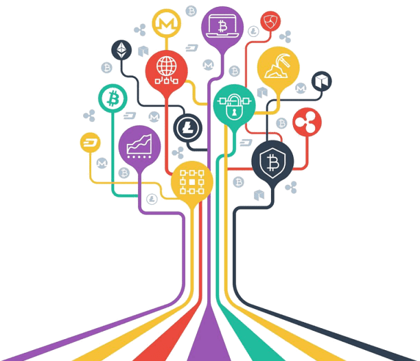

¿Que son las altcoins?
Se le llama altcoins a las criptomonedas que no sean Bitcoin. Alt viene del termino alternativo y Coin se utiliza para referirse a las monedas. Las altcoins se derivan de bitcoin y siguen los principios del mismo. Hay una gran variedad de altcoins similares o mejoras de otras. Al crear una altcoin se busca subsanar una dificultad como por ejemplo los altos costos en las transacciones de bitcoin o la baja velocidad de las mismas. Las monedas alternativas nacen muchas veces para mejorar algo.
¿Como se crea una altcoin?
Bitcoin usa como como código fuente open source, significa que es de código abierto y cualquiera pueda agarrar el código y modificarlo para crear una criptomoneda alternativa manteniendo los principios del bitcoin como la descentralización y el anonimato.
¿Las altcoins tienen valor?
Las altcoins tambien cotizan en el mercado financiero por lo que también se utilizan para especular con su precio ya que pueden llegar a tener mejor rendimiento que bitcoin.
Los tokens son una representación de un activo que reside encima de otra blockchain, por lo tanto, no tiene una cadena de bloques propia, sino que actúa sobre la de otra criptomoneda

Ejemplos de Tokens
BNB
es una criptomoneda que corre en la red de BSC (Binance Smart Chain), esta red pertenece al Exchange más grande del mundo, Binance. Esta blockchain es descentralizada, con transacciones baratas (Depende del precio de BNB) que hoy cuestan menos de 1 dólar, y rápidas que llegan a tardar menos de 10 segundos. La BSC ofrece también la funcionalidad de los Smart contracts, así como la red de Ethereum. BNB es el gas de la red, para hacer una transacción o firmar un contrato se debe utilizar una proporción de BNB.
Un BNB al dia de hoy cotiza $310 con un ath (Maximo historico) de $680
Cake
es un token emitido dentro de la red BSC, es el token perteneciente a PancakeSwap (un Exchange descentralizado para intercambio de tokens dentro de la red BSC) El sitio también ofrece la funcionalidad de stakeo, algo así como un plazo fijo, pero sin condiciones de tiempo ya que puede retirarse cuando uno quiera. Podes depositar Cake y recibir una proporción de Cakes diarios, o recibir hasta otros tokens. También se puede depositar Cake en otros sitios de staking, y recibir una proporción en Cake y otra en el token del sitio de staking como AUTO.
El valor de Cake hoy es de $14 y tiene un ath de 42
Autofarm
empezo en la red de BSC y ahora tambien se encuentra en HECO y MATIC, es un sitio de staking automático, ya que el interés generado se acumula sobre el capital stakeado gracias a su sistema de bóvedas y esto nos ahorra comisiones de BNB y no nos genera dependencia de cuando restakear los tokens como si lo hace PancakeSwap, aunque ahora tenga la función automática, pero solamente en el pool de cake. Autofarm al stakear tokens nos paga mayormente en el token elegido, y una mínima parte en el token de AUTO.
El valor de Auto hoy es de $900 con un ath de $14.000